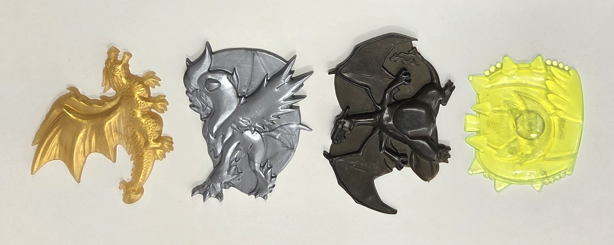
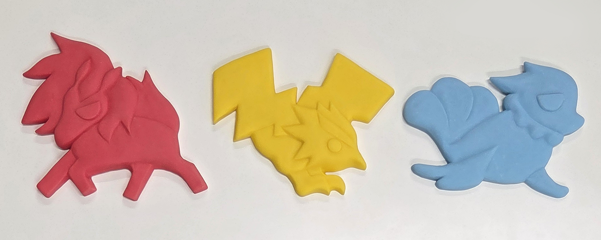
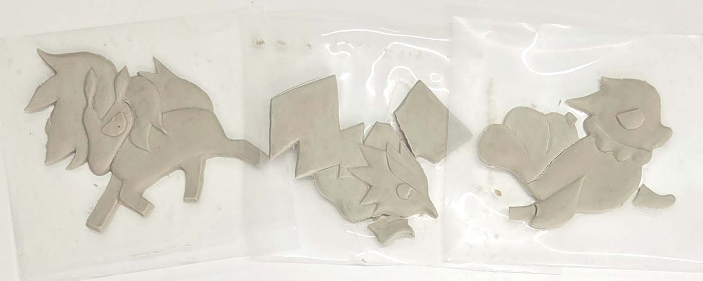
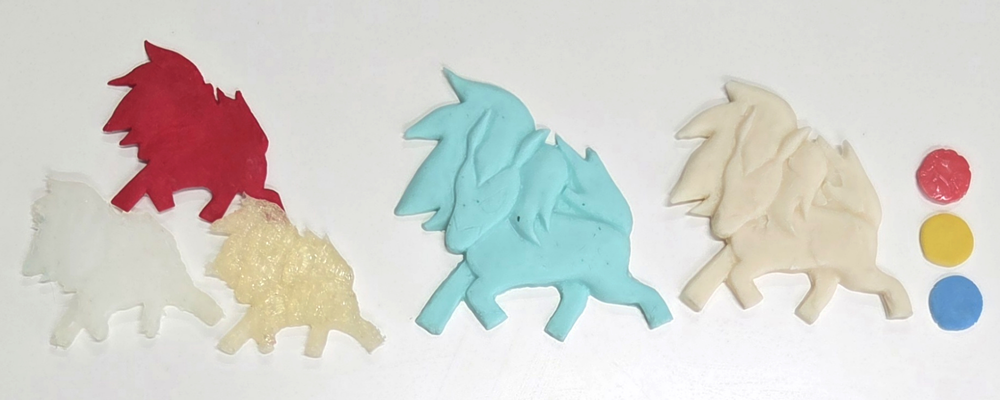
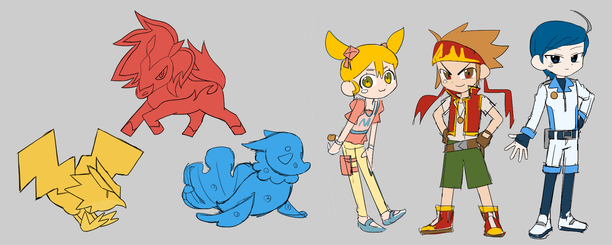

ヒストリーと書いてダイアリーと読みます。
私の考えたことがたくさん書いてますので
この記録をぜひ楽しんでくださいm( _ _ )m
▶新メンコの誕生は···
新メンコの歴史、その始まりはおそらく2026年1月。
私には卒展では絶対に小学生魂を燃やしてドキドキワクワクを
爆発させる楽しいことをやりたいという強い意志がありまして、
まあとにかく何らかの玩具（ホビー）をメインにする展示をやりたいと。
ベ●ブレードとかビー●マンとか、そんな玩具は個人で作れるわけないし、
どうする〜？何がいいかな〜って悩んでいた私の頭をよぎる単語···
それは『딱지(メンコ)』!!(ええ?! なんか韓国語出たぁー!!)
おっと、これを読んでくれてるそこのあなたに質問です。
普通の紙メンコじゃなくて、韓国のゴムメンコはご存知でしょうか？

↑これこれこれ！これなのですが、立体だし形がそれぞれなんです。
韓国人の私は子供の頃よくこれで遊んでました。
ああ···感んじるぞ···ドキドキワクワクが···止まらないっ!!
そうだ!! 卒制でメンコを作ってみるのはどうかな〜( ˘ω˘ )〜
これなら作れそういや作れる絶対に作って見せるやればできるんだ
うおおおもう我慢できないっ(✧∀✧)/!! という流れで······

(ドン) は〜い 作りました。ﾜｧ―ﾟ✩°｡⋆⸜( * ॑꒳ ॑*)⸝ ｡°✩｡―亻♡
結構いい感じに仕上がってすごい嬉しいです。
▶人生は試行錯誤を繰り返し···
簡単に「できたぜ!!」とか書いてますが、実は試行錯誤の連続でした。
メンコ量産計画：原型を作る→シリコンで型をとる→量産
単純な過程ですが···自分、すんごいケチと反骨精神の塊で成っている者···
わざわざ周りが行かない方向へと走って行く癖があるんです。
なので、原型を作る時3Dの勉強してBlenderで作れはよかったのに、

出てきてしもうた···「反骨精神」!!（油粘土でございます）
ゴミにしか見えませんよね、そうですよね（泣）あれ？私、泣いてる？
まあでも頑張って作ったし大満足です。が、
この前にも試行錯誤が···

これらは原型を作る練習と材料探しの旅をした足跡です。
「絶対にただのゴミではありません」
樹脂粘土、コーキング、液体ゴム、シリコン などなど···
いろんな材料を試してみました。（↑全部失敗だったぜ）
そして、最終的に···右の白いやつを作る時に使った
モデナという粘土でメンコを量産、作りまくることしました＾O＾）!
そして今のメンコがあって新メンコファイターズが誕生したのです。
▶キャラクターを作らなきゃ···
キャラクターを作ってメンコをデザインするのではなく、
メンコを考えてそれに似合うキャラクターを作ろうとしました。
文字を読むより目で見たを方が早いと思いますので···

はい!! 左がが初期メンコで右が初期キャラクター立ち絵です^0^)v
メンコもすごい雑で、絵柄も違うのですがまあまあ初期ですので（笑）